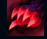

Swain

| Swain The Noxian Grand General | |
|---|---|
| Release date | 21.04.2010 |
| Class | Battlemage |
| Positions | Support |
| Resource | Mana |
| Range type | Ranged |
| Adaptive type | Magic |
| Base statistics | |||
| Health | 562 – 1970 | Mana | 325-1175 |
| Health regen. | 7 – 19.75 |
Mana regen. | 7.5-16.85 |
| Armor | 38 – 70 | Attack damage | 52 – 99.6 |
| Magic resist. | 30 – 38.5 | Crit. damage | 175% |
| Move. speed | 325 | Attack range | 525 |
Jericho Swain este conducătorul vizionar al Noxusului, o nație în plină expansiune ce pune preț doar pe putere. A fost înfrânt și și-a pierdut mâna stângă într-unul dintre războaiele împotriva Ioniei, dar ambiția sa necruțătoare l-a ajutat să preia controlul asupra imperiului și să prindă strâns hățurile puterii în noua sa mână demonică. Acum, Swain își conduce trupele din prima linie de atac, luptând împotriva unei forțe întunecate pe care doar el o vede, care se reflectă în frânturile de imagini adunate de corbi de la cadavrele lăsate în urmă. Trăiește înconjurat de sacrificii și mistere, dar cel mai mare secret al lui e că adevăratul inamic se află în interior. | STOL LACOM Corbii lui Swain pot strânge ''fragmente de suflet'', care îl vindecă și îi cresc permanent viața maximă. Swain poate da clic dreapta pe campionii inamici imobilizați pentru a-i trage mai aproape de el, provocându-le daune și smulgându-le un ''fragment de suflet''. |
|||
|---|---|---|---|---|
MÂNA MORȚII Swain dezlănțuie mai multe fulgere oculte care trec prin inamici. Valoarea daunelor suferite de inamici crește în funcție de numărul de fulgere care îi lovesc. |
||||
VIZIUNE IMPERIALĂ Swain deschide un ochi demonic care le provoacă daune inamicilor și îi încetinește. Campionii loviți sunt dezvăluiți și, în plus, îi oferă lui Swain un ''fragment de suflet'' |
||||
|  |
ȚINTUIRE Swain lansează o undă de putere demonică în fața sa. Apoi, aceasta se îndreaptă înapoi către Swain și țintuiește inamicii pe care îi lovește. |
|||
TRANSFORMARE DEMONICĂ Swain se transformă într-un demon și secătuiește de viață campionii inamici, minionii inamici și monștrii neutri din apropiere. Swain poate folosi ''Flăcările demonice'' pentru a-și încheia transformarea și a dezlănțui o explozie de flăcări ale sufletului, provocând daune egale cu o parte din viața pe care a secătuit-o. |